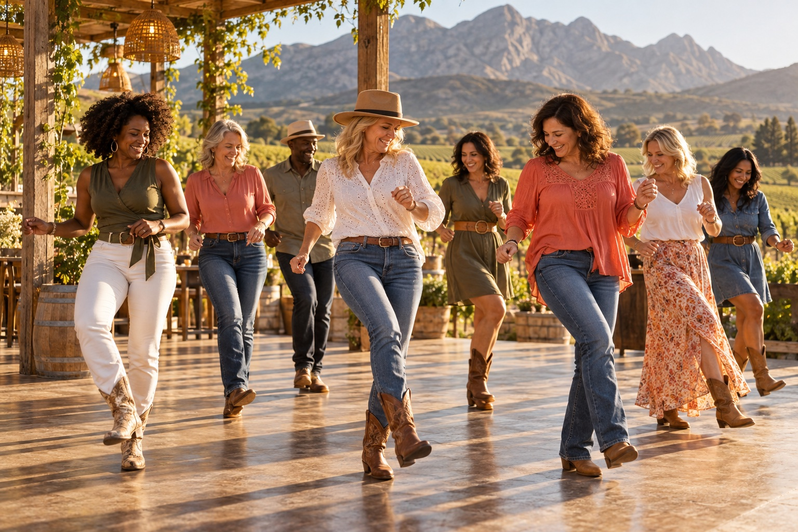

Get everyone involved
A shared activity that invites your team to move, participate, and try something together.
EVENTS & CORPORATE FUNCTIONS
Line & Wine offers more than regular dance classes.
We bring people together — and give them something to smile about.
TAKE YOUR TEAM OUT OF THE ORDINARY
Give your next corporate function a refreshing change of pace. Our fun, interactive line dancing experiences invite colleagues to take part, share a laugh, and connect in a whole new way.
Learning steps together encourages teamwork and participation. Those shared moments — finding the rhythm, getting a move right, laughing when you don't — can bring people closer.
Inquire about an eventA shared activity that invites your team to move, participate, and try something together.
Create space for easy conversations and shared laughter outside the everyday work routine.
A lively addition to a team-building day, celebration, or corporate gathering.
LET'S MAKE SOMETHING LOVELY HAPPEN
Share your preferred date, location, approximate group size, and the occasion. We'll chat through the possibilities with you.
Chat about your plansGOOD TIMES START WITH A HELLO
Whether you're looking to join a class, meet new friends, or bring a little line dancing fun to your next event, we'd love to hear from you.

A reason to get together.BEYOND THE WEEKLY CLASS
More music.
More laughter.
More memories.
Some of the best friendships grow beyond the dance floor. Our social events give our community more ways to spend time together, celebrate, and enjoy the good things in life.
- 01
- 02
- 03
Ask what's coming up ↗Community dance evenings
Get together, find your rhythm, and enjoy an evening of shared steps and smiles.
Themed gatherings
A playful twist, a little dressing up, and another reason to let your hair down.
Celebrations & connections
Mark the moments that matter and get to know your dance friends beyond class.